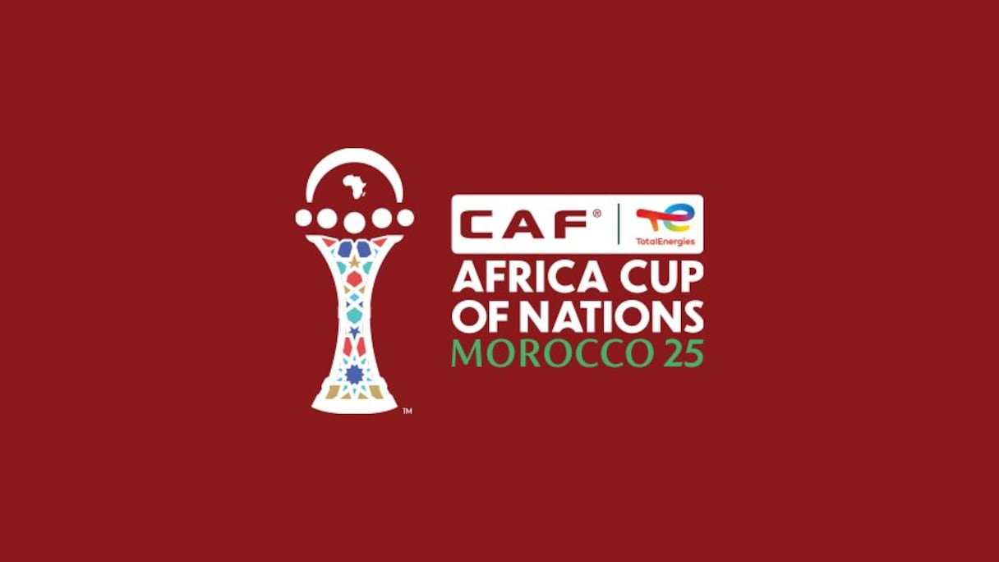

À propos de la CAN 2025
La Coupe d'Afrique des Nations 2025 (CAN 2025) est la 35e édition du plus grand tournoi de football africain. Organisée par la Confédération Africaine de Football (CAF), elle réunira les meilleures équipes du continent pour une compétition passionnante et festive. La CAN 2025 promet d'être un événement inoubliable, rassemblant des millions de fans autour des valeurs du sport, de la diversité et de la fraternité africaine.
Date : du 21 décembre 2025 au 18 janvier 2026.
Nombre d'équipes : 24 nations participantes.
Format : Phase de groupes puis élimination directe.
